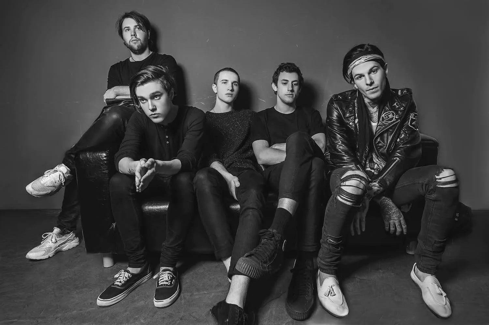

the Neighbourhood
The Neighbourhood, often stylized as "THE NBHD," is an American alternative rock band formed in Los Angeles in 2011. Known for their moody and atmospheric sound, blending elements of indie rock, R&B, and electronica, The Neighbourhood gained attention with their debut single "Sweater Weather." With introspective lyrics and captivating melodies, they have cultivated a distinct musical identity and attracted a dedicated fanbase.
Lost and afraid, young and innocent but getting older. I don't wanna be alone...
